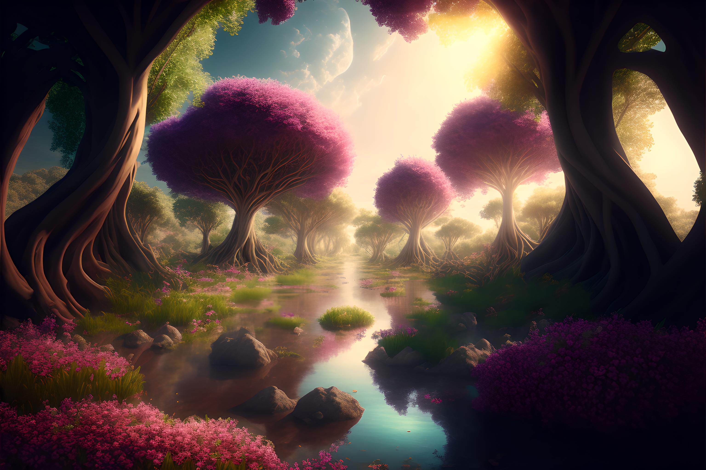
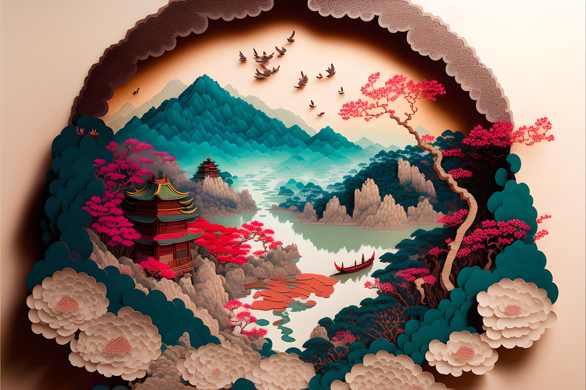
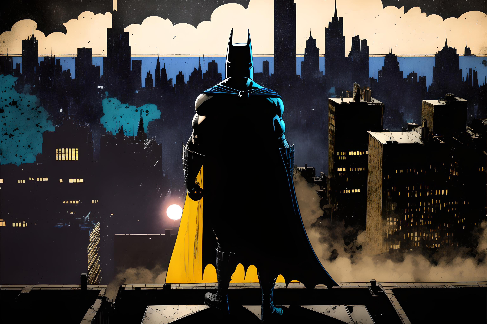

A sureal parallel world where mankind avoid extinction by preserving nature, epic trees, water streams, various flowers, intricate details, rich colors, rich vegetation, cinematic, symmetrical, beautiful lighting, V-Ray render, sun rays, magical lights, photography.

Chinese illustration, oriental landscape painting, above super wide angle, magical, romantic, detailed, colorful, multi-dimensional paper kirigami craft.

Pirate ship trapped in a cosmic maelstrom nebula, rendered in cosmic beach whirlpool engine, volumetric lighting, spectacular, ambient lights, light pollution, cinematic atmosphere, art nouveau style, illustration art artwork by SenseiJaye, intricate detail.
Photography closeup portrait of an adorable rusty broken-down steampunk robot covered in moss moist and budding vegetation, surrounded by tall grass, gorgeous dramatic spring landscape landscape scenic photograph, misty futuristic sci-fi forest environment, bokeh, depth of field.
